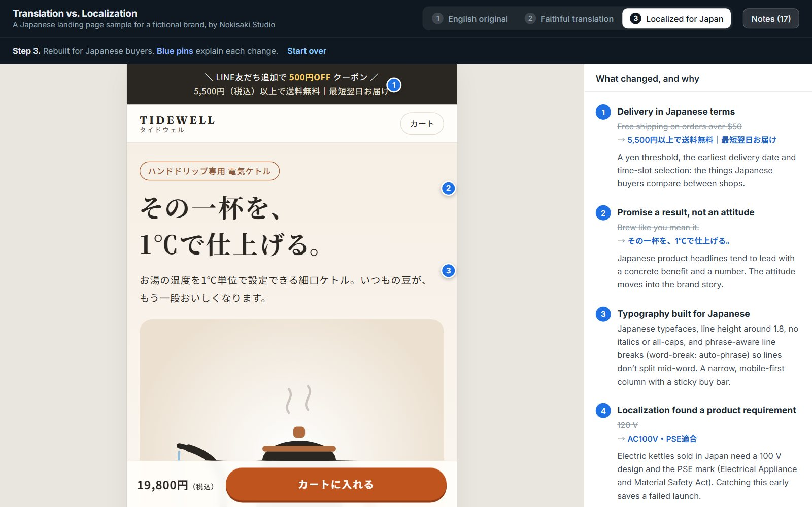
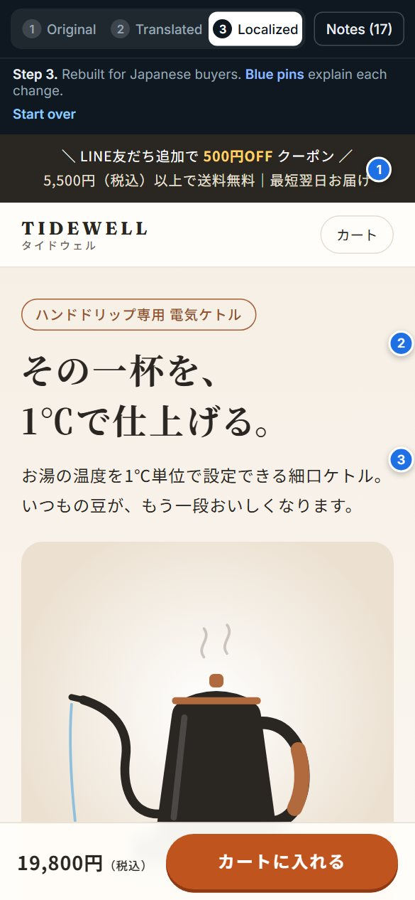
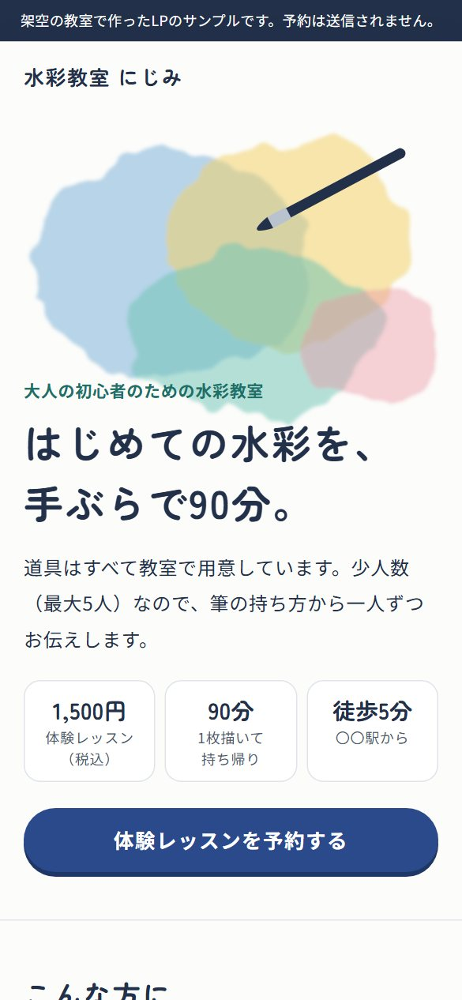
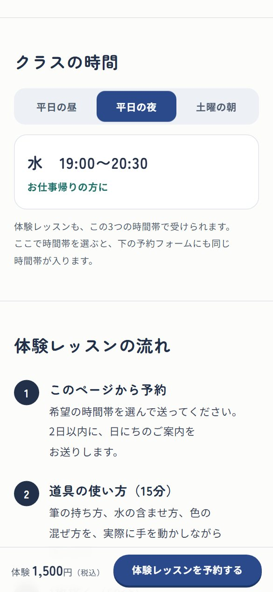
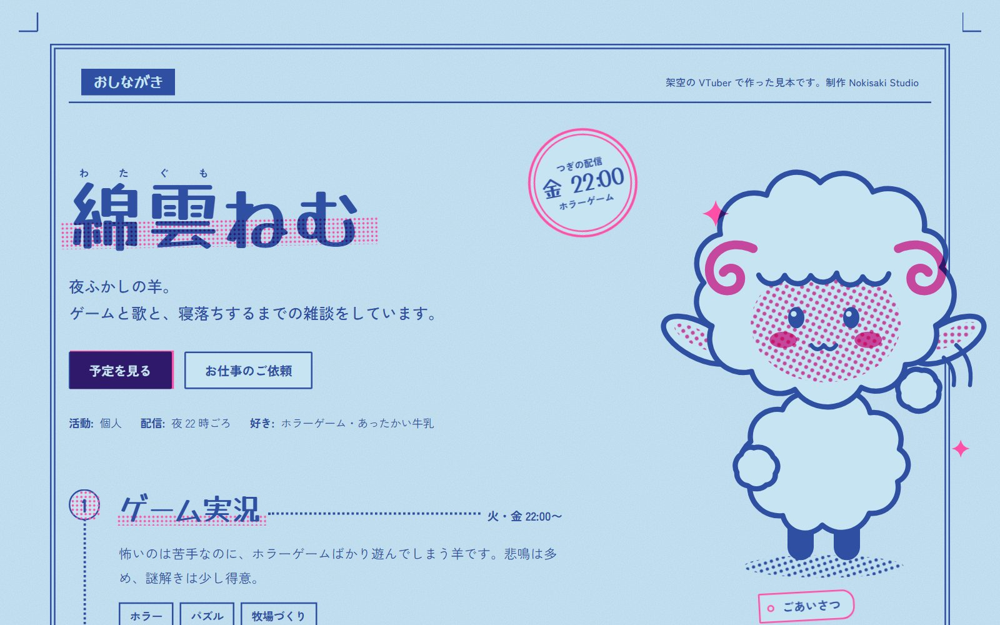
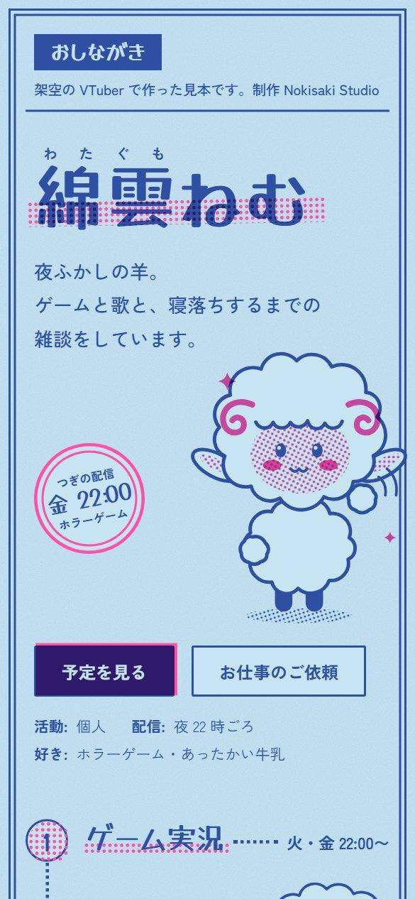

制作見本帳
- LP・商品ページの制作
- 構成・文章・デザイン・HTML/CSS まで。スマホで見る方を先に考えて作ります。
- 毎日の作業の自動化
- Python・Google スプレッドシート（Apps Script）で、データの取り込み・集計・レポートを。
海外ブランドの日本向け商品LP
架空のケトル「TIDEWELL」


- 英語の元・直訳・日本向けの3段を、上の切り替えで見比べられる
- 変えた所ごとに、理由の注記（17か所）
- 税込の価格と、画面の下に固定の購入ボタン
英語のページを訳しただけでは、日本の買い手が見比べる所（税込の価格・送料・届く日・必要な表記）が抜け落ちます。直訳した版と作り直した版を切り替えて見比べられるようにし、変えた所ごとに理由を書きました。
切り替えの帯と注記は英語で書いてあります。
この見本を開く
nokisaki-studio.github.io/jp-localization-sample/
水彩教室の体験申し込みLP
架空の教室「水彩教室 にじみ」


- 料金・所要時間・駅からの距離を、最初の画面に
- 時間帯を選ぶと、下の予約フォームにも同じ時間帯が入る
- どこまで読んでも押せる、下に固定の予約ボタン
はじめての方は、料金と時間と場所が分からないと申し込めません。それを最初の画面に置き、時間帯を選んで予約するまでを1ページで進めます。スマホで見る方を先に考えて作りました。
見本なので、予約は送信されません。
この見本を開く
nokisaki-studio.github.io/nijimi-lp-sample/
VTuber のプロフィールLP
架空の VTuber「綿雲ねむ」


- PC では、読んでいる項目に合わせてキャラの姿が替わる
- 次の配信を、判子の形で最初の画面に
- 送ると受付印が押される、お仕事のご依頼の申込欄
手持ちのキャラの絵を案内役にして、何を配信していて、次はいつで、どこで見られるかが、1枚を読むだけで分かるようにしました。お仕事の依頼を受ける申込欄も付けています。
見本なので、申込欄の内容は送信されません。
この見本を開く
nokisaki-studio.github.io/vtuber-profile-sample/
奥付
- 屋号
- Nokisaki Studio（のきさきスタジオ）
- 作り方
- 下書きとコードに AI ツールを使い、仕上げの確認はすべて自分で行います。
- やりとり
- 文章のみで承ります。
- 見本について
- どれも架空の題材で作った自主制作です。実在の会社・商品・人物とは関係ありません。
- ご相談
- このページを開いた、応募や出品のページのメッセージからお知らせください。